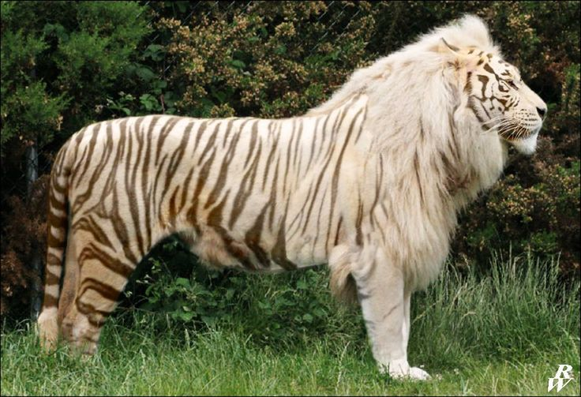
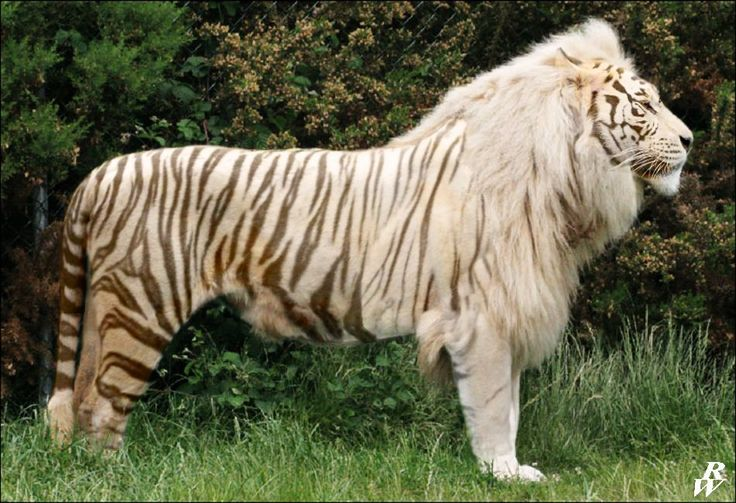

My The Liger

The amazing Liger the coolest animal Its a mix between Lion and a Tiger, a true apex preditor.
this animal yet rare but is beautiful imagine a striped white lion

this animal yet rare but is beautiful imagine a striped white lion